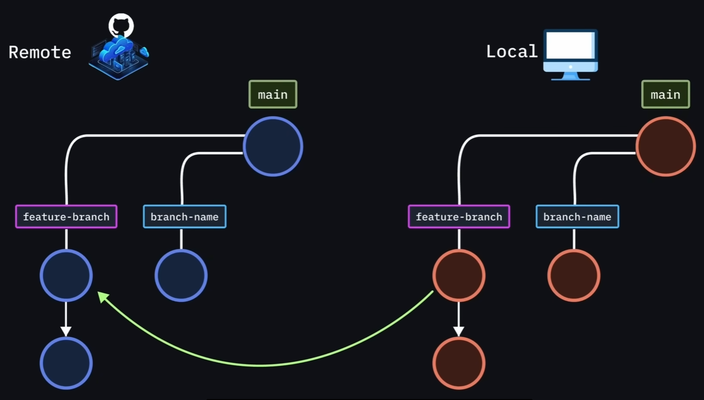
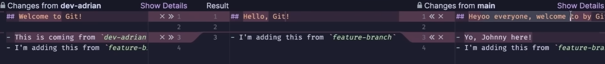

Git指令思路¶
配置Git¶
初始化Git¶
目前使用main更常用
分支就是项目的并行版本
Git使用¶
显示当前Git已经跟踪的项目文件
定期提交更改很重要
-m是指使用单引号来进行提交信息说明
Git回滚
git log 使用Q来退出当前日志状态
在git中有一个head的概念，类似于链表来指向节点来管理每个提交快照
git checkout只是查看快照状态，不会删除任何文件和记录
Text Only
//回到main最新状态
git checkout main
//强制回到主分支
git checkout -f main
//强制改变当前分支名字为main
git branch -M main
//至此已经超越大部分git使用者了
Text Only
//本地连接远程仓库,可以不止链接一个仓库，可以多次运行，只需要修改add后面的仓库分支名字即可
git remote add origin [远程仓库链接]
//推送本地仓库到远程,报错就自己搜索
git push -u origin main
分支合并¶
Text Only
//创建新分支
git branch [branch-name]
//切换到刚刚新建的分支
git checkout [branch-name]
//回到主分支
git checkout main
//一键创建分支并自动切换到新分支
git checkout -b [feature-branch]
//创建新分支会从你当前分支来创建
//或者直接指定从哪个分支来创建新分支
git branch new-branch-name source-branch
//修改完毕之后
git add ./
//注意规范，在提交当前分支时，要注意提交信息的使用，最好要说明合并包含此提交的分支后会产生什么效果
git commit -m 'add readme'
git push --set-upstream origin feature-branch
//或者
git push -u origin feature-branch
//这些操作之后，后续更改这个分支，就可以直接
git push//git commit //git add
//如果有人修改了远程分支，这个时候就需要
//从远程仓库拉取变更，同步到本地
git pull
//当你的分支修改完之后，可以直接在github网站直接进行合并拉取操作，通过后就可以直接合并到主分支，你的分支不//需要的话，可以看到提示落后一个版本，没有领先任何版本，就可以直接删除
//切换回主分支
git checkout main
//同步本地和远程的最新分支
git pull

解决合并冲突¶
Text Only
//1切换到主分支
git checkout main
//拉取最新分支
git pull
//切换到你的分支（后提交的冲突分支）
git checkout [branch-name]
//合并主分支到你的当前分支
git merge main
//然后手动更改冲突的行
//添加刚刚解决问题文件
git add ./
//解决合并冲突
git commit -m '解决合并冲突'
git push

git 救星¶
Text Only
//回退到某个提交版本，但是后续的提交版本不需要了，然后后续提交版本的修改又想一起保留，后续观察分析
//混合重置模式,回退到特定版本，且不会保留暂存状态，接着就可以进行相关修改处理了
git reset [hash]
//软重置,回退之后，会保留暂存状态
git reset --soft [hash]
//硬重置,回退之后，后续就全删了
git reset --hard [hash]
//git revert,希望保留日志记录，但是又想回退到指定版本
git revert [hash]
//修改。。。
git add ./
//最中操作，会把操作痕迹留在日志中
git revert --continue
//临时保存未提交的修改
git stash
git stash list
git stash apply [暂存的名称]